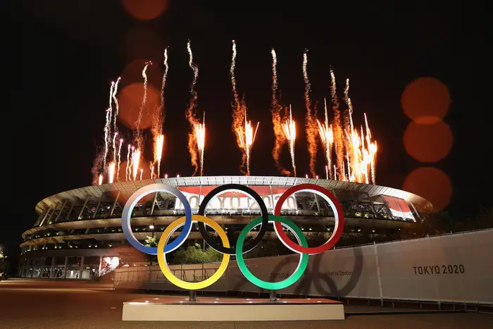
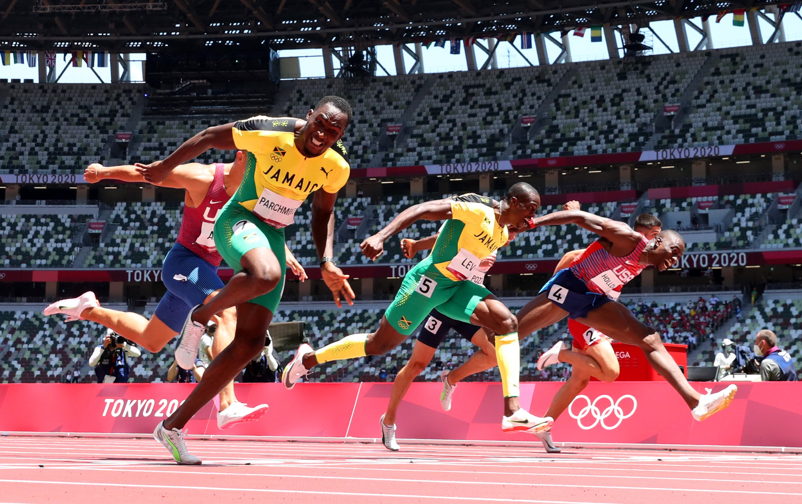
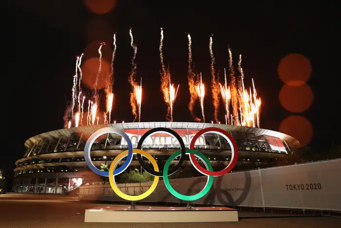
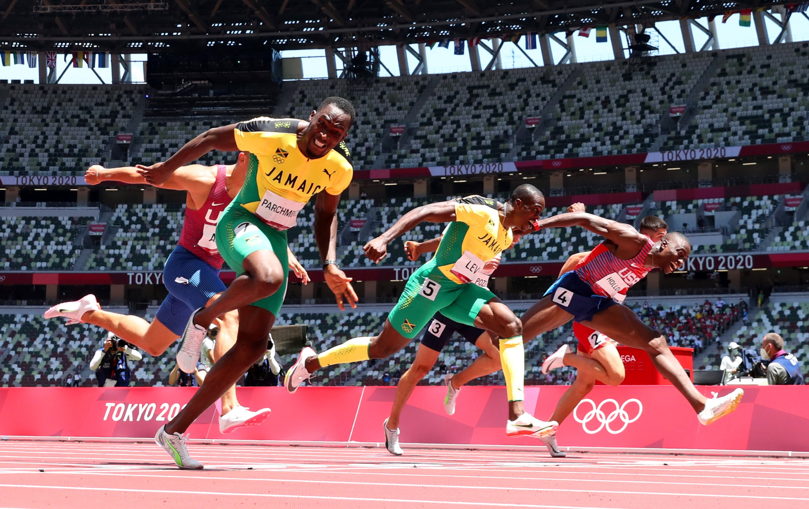

SOME FUN FACTS
Ancient origins: The first Olympic Games took place in 776 B.C. and were held every four years as a festival to honor Zeus, the king of the gods.
Medals: The design of the medals differs between the Summer and Winter Games, with the Winter Games medals being larger, thicker, and heavier.
Olympic torch: The Olympic torch is a reminder of the Games' Greek origins.
Olympic logo: The five rings in the Olympic logo represent the five world regions that the athletes originally came from.
Olympic medals: The host city designs the Olympic medals.
Medal introduction: Gold, silver, and bronze medals were introduced in 1904.
 


